Phase 4 Documentation · Symmetrical Fault Study & Equipment Defense
Fault Analysis, Equipment Protection Mapping & Viva Guide
A complete, presentation-ready engineering manual explaining why fault analysis is performed at each of the 5 plant locations, what currents flow, which equipment is used to detect, limit, and isolate each fault, and what catastrophic damage would occur if protection failed — complete with marked Single Line Diagrams, Simulink snapshots, and viva questions.
1 · Why Do We Perform Fault Analysis? (Engineering Purpose)
Short-circuit fault analysis is not merely a theoretical calculation — it is the absolute foundation of physical substation design, equipment selection, and system safety according to IEEE C37 and IEC 60909 standards. We perform fault calculations for four critical engineering purposes:
1. Equipment Rating & Withstand Verification
Circuit breakers, disconnectors, current transformers, and isolated phase busbars (IPB) must withstand the electromagnetic forces (proportional to $i_p^2$) and thermal energy ($I^2 t$) of short-circuit currents. Fault analysis dictates the required breaking capacity (e.g., GCB 100 kA, GIS 50 kA). If a breaker is installed with a rating below the prospective fault current, attempting to interrupt the fault will cause explosive arc chamber rupture.
2. Protective Relay Pickup & Setting Derivation
Protective relays cannot be configured arbitrarily. Symmetrical fault analysis provides the exact minimum and maximum fault currents for all fault types (3-phase LLL, single-line-to-ground LG, line-to-line LL, double-line-to-ground LLG). Overcurrent pickup currents ($I_p$), differential percentage restraint slopes (Slope 1/2), and knee points are mathematically calibrated from these values.
3. Selective Coordination & Grading (CTI = 300 ms)
When a short circuit occurs, only the circuit breaker closest to the fault must trip. Upstream breakers must remain closed to maintain power continuity to healthy zones. Fault calculations allow engineers to calculate time multiplier settings (TMS) ensuring a mandatory 300 ms Coordination Time Interval (CTI) between downstream and upstream relays.
4. Grounding & Zero-Sequence Control
Single-line-to-ground faults represent over 70% of power system events. Fault analysis verifies the performance of Neutral Grounding Resistors (NER) in limiting stator damage on the 22 kV bus while ensuring sufficient zero-sequence current exists for sensitive relays to trip.
2 · The 5 Strategic Fault Locations — Why Test Each Position?
To rigorously test the entire plant from generation to transmission, five distinct electrical nodes were chosen for short-circuit analysis:
| Fault Tag | Physical Location in Plant | Voltage Level | Why Test a Fault on This Position? (Engineering Purpose) |
|---|---|---|---|
| F1 | Generator Bus / Stator Terminals (Between Generator & GCB) |
22 kV |
1. Maximum Machine Stress: Tests the absolute maximum short-circuit current the generator can produce (126.21 kA LLL) to verify generator stator thermal and mechanical bracing. 2. GCB Rating Check: Verifies that the Generator Circuit Breaker (GCB 10BAC10, 100 kA rating) can safely clear internal faults. 3. Stator Ground Fault Check: Tests the Neutral Earthing Resistor (NER) limitation to 7.27 A to prevent irreversible stator iron core burning. |
| F2 | GSUT Low-Voltage Terminals (Between GCB & Transformer LV Delta) |
22 kV |
1. Transformer Differential (87T) Verification: Inside the 515 MVA GSUT unit protection zone. Tests differential trip response on through-faults vs internal faults. 2. Vector Group Phase Shift: Proves that the relay correctly compensates for the $+30^\circ$ phase shift of the YNd1 transformer.3. Delta Winding Zero-Sequence Trapping: Proves that ground faults on the 22 kV side remain isolated from the 230 kV side. |
| F3 | 230 kV GIS Switchyard Busbar (Bus 1 / Bus 2 Compartments) |
230 kV |
1. Busbar Differential (87B) Speed: Tests the 35 ms high-speed busbar protection. Without 87B, overcurrent backup takes 7.28 s, which would blow up the GIS switchgear. 2. GIS Switchgear Duty: Verifies that the 50.53 kA fault does not exceed the Siemens 8DN9 GIS 50 kA rating. 3. Grounding Verification: Demonstrates that unlike 22 kV, the 230 kV grid is solidly grounded, generating a massive 45.74 kA ground fault. |
| F4 | 230 kV Transmission Line Mid-Point (50% along the 230 kV corridor) |
230 kV |
1. Line Current Differential (87L): Tests the optical fiber line differential relay (Siemens 7SD5221) clearing mid-line faults in 40 ms. 2. Distance Relay Zone Reach: Verifies that distance Zone 1 covers 80% of the line instantaneously, while Zone 2 covers the remaining 20% with time grading. 3. System Stability: Ensures rapid isolation of the line without disturbing the generator's rotor angle stability. |
| F5 | Remote Grid Substation Bus (Ghorashal / Comilla 230 kV Bus) |
230 kV |
1. Protection Zone Boundary Selectivity: Proves that external grid faults DO NOT cause false tripping of our plant's differential relays (87G, 87T, 87B, 87L all restrain). 2. Coordinated Backup: Verifies that local breaker Q0 provides coordinated time-overcurrent backup (4.54 s to 7.48 s) only if the remote substation's own breakers fail. |
3 · Visual Positions: Marked Master SLD & Simulink Snapshots
Below are the official project diagrams with all 5 fault study locations ($F_1$ to $F_5$) clearly highlighted, circled, and labeled. Click any diagram to open full-screen in high definition.
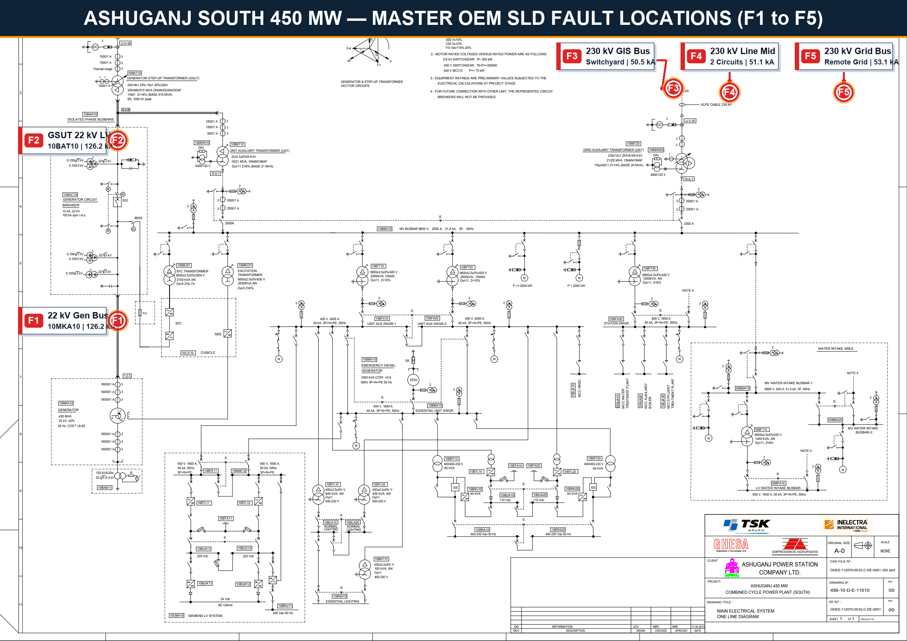
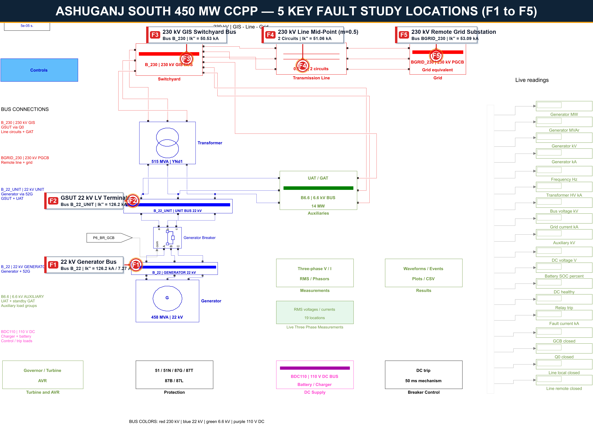
PHASE6_ASHUGANJ_CCPP_DYNAMIC_MODEL.slx showing where faults are injected inside each physical subsystem block.🔍 Master SLD Close-Up Inspection — 1:1 Scale Views of Zones F1 to F5
To ensure 100% legibility on projectors and from a distance, below are high-definition 1:1 scale crops from the OEM Master Single Line Diagram. Each crop highlights the exact physical busbar, circuit breaker numbers, instrument transformers, and IEC 60909 fault currents. Click any image to expand full-screen.
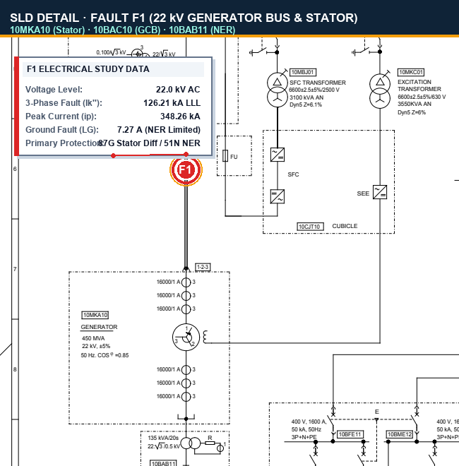
10MKA10 stator terminals, Generator Circuit Breaker 10BAC10 (100 kA rating), and Neutral Earthing Resistor 10BAB11.
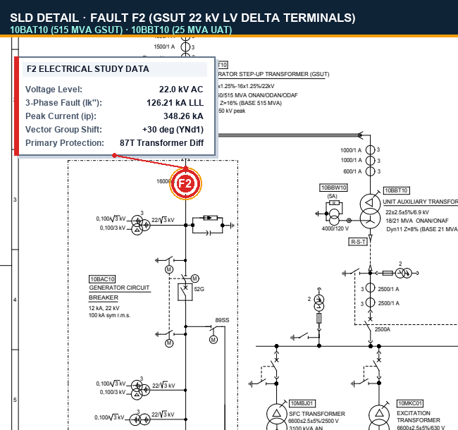
10BAT10 LV delta connection (22 kV side), Unit Auxiliary Transformer 10BBT10 (25 MVA) take-off, and IPB busduct.
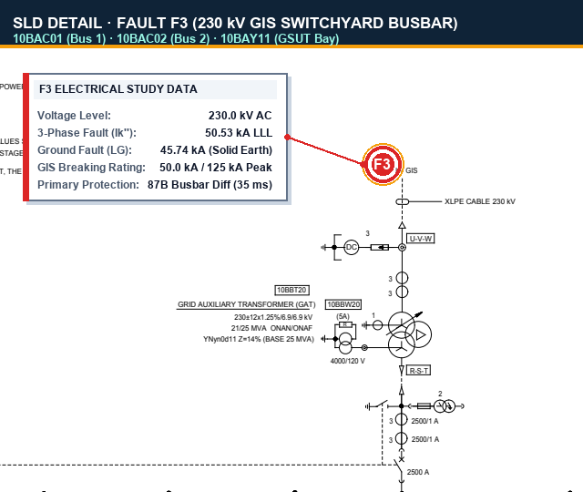
10BAC01 and Bus 2 10BAC02, GSUT Bay 10BAY11, and Disconnectors Q1/Q2.
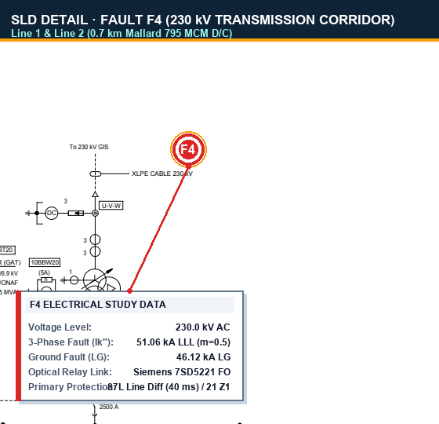
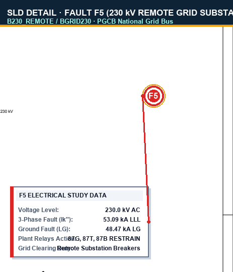
Shows the receiving-end 230 kV utility busbar (PGCB national grid node), tie breakers, and external grid Thévenin source equivalent ($|Z| = 2.656\ \Omega$).
• Peak Asymmetrical Current: $i_p = 144.11\text{ kA}$
• 1-Phase-to-Ground Fault Current: $I_k''\text{ LG} = 48.47\text{ kA}$
• Relay Action: Plant differential relays (87G, 87T, 87B, 87L) RESTRAIN; fault is cleared exclusively by remote grid utility breakers.
Individual Simulink Fault Injection Subsystems:
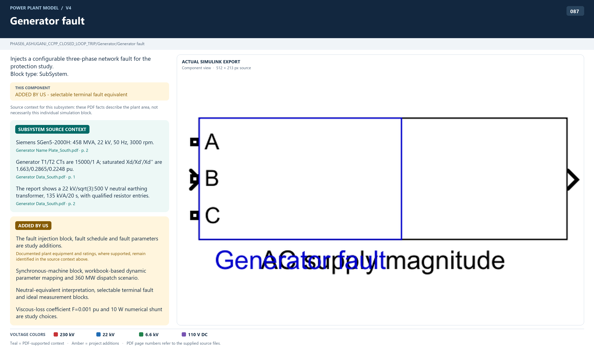
<root>/Generator. Injects 126.21 kA LLL / 7.27 A LG faults directly at generator stator terminals.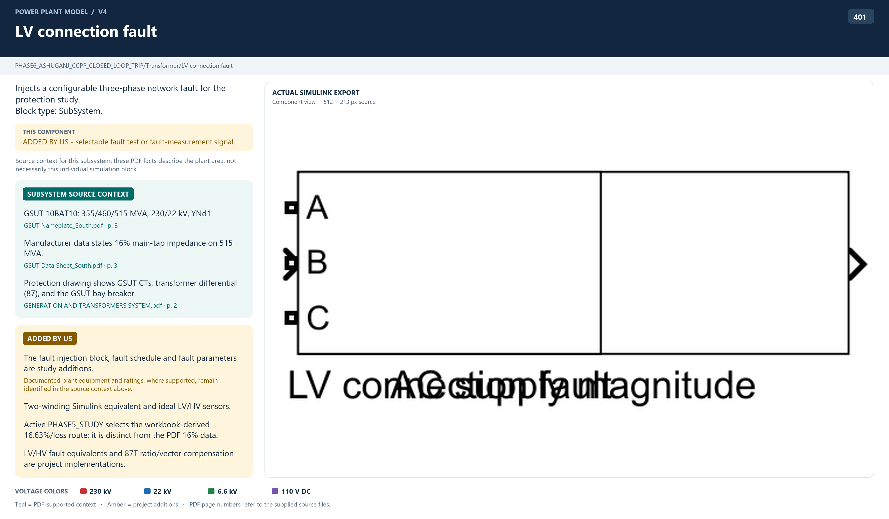
<root>/Transformer at the 22 kV delta connection terminals.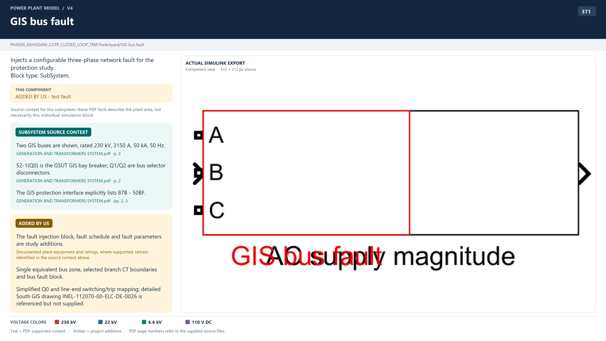
<root>/Switchyard on the main 230 kV GIS busbar.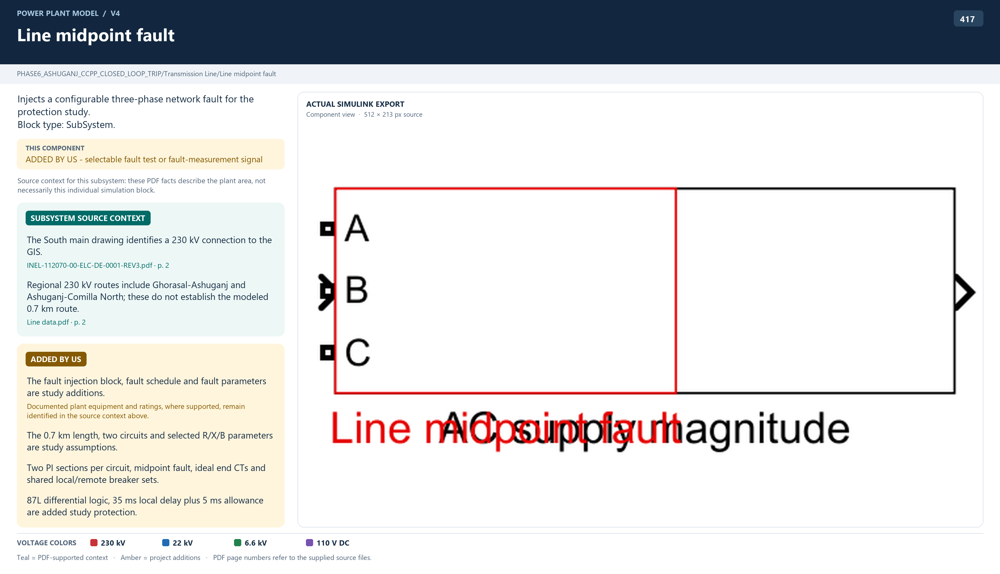
<root>/Transmission Line between Circuit 1 plant-half and remote-half.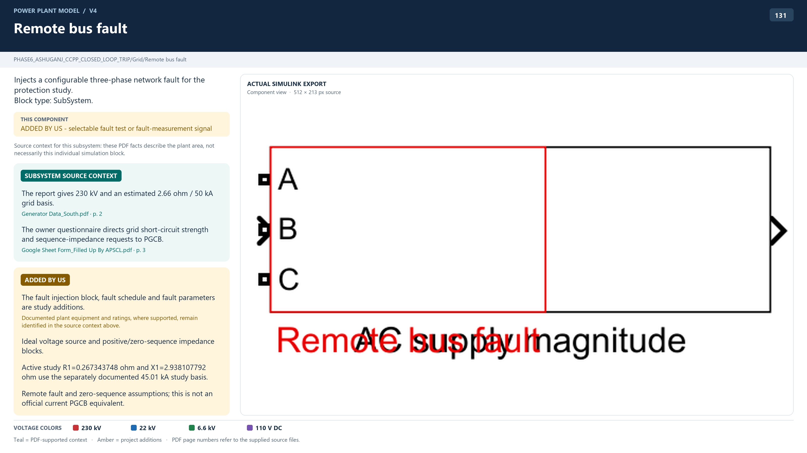

4 · Symmetrical Component Fault Analysis Results
The table below presents the verified symmetrical short-circuit currents calculated across all five locations using the IEC 60909 / symmetrical components solver in Phase 4:
| Fault Node | Voltage | 3-Phase (LLL) Symmetrical $I_k''$ |
Peak Make Current ($i_p$) |
1-Phase-to-Ground (LG) $I_k''$ |
Line-to-Line (LL) $I_k''$ |
Double-Line-to-Ground (LLG) $I_k''$ |
Short-Circuit Fault MVA |
|---|---|---|---|---|---|---|---|
| F1 Generator Terminals | 22 kV | 126.21 kA | 348.26 kA | 0.00727 kA (7.27 A) | 109.25 kA | 109.25 kA | 4,809 MVA |
| F2 GSUT LV Terminals | 22 kV | 126.21 kA | 348.26 kA | 0.00727 kA (7.27 A) | 109.25 kA | 109.25 kA | 4,809 MVA |
| F3 230 kV GIS Bus | 230 kV | 50.53 kA | 129.80 kA | 45.74 kA | 43.76 kA | 48.50 kA | 20,130 MVA |
| F4 230 kV Line Mid-Point | 230 kV | 51.06 kA | 131.30 kA | 46.12 kA | 44.22 kA | 48.97 kA | 20,340 MVA |
| F5 230 kV Remote Grid | 230 kV | 53.09 kA | 137.40 kA | 48.47 kA | 45.97 kA | 51.18 kA | 21,148 MVA |
• Notice that at F1 (22 kV Generator Bus), the single-line-to-ground fault is restricted to only 7.27 A because of the generator's Neutral Earthing Resistor (NER).
• Conversely, at F3 (230 kV GIS Bus), the ground fault explodes to 45.74 kA because the 230 kV grid and the GSUT HV wye neutral are solidly grounded!
5 · Equipment Mitigation Mapping: What Equipments We Use & For What Purpose
To safely detect, limit, and isolate faults at each position, an entire coordinated defense system of electrical equipment is deployed. Here is the exact mapping of equipment used to protect against faults at each location:
F1 Defense Equipment for 22 kV Generator Bus Faults:
| Equipment Category | Specific Equipment Model / Tag | Primary Purpose & Role in Fault Mitigation |
|---|---|---|
| Primary Sensing | 15,000 / 1 A Phase CTs (Class 5P20, 30 VA, 3 cores) |
Steps down high phase currents (up to 126 kA) to safe secondary levels for measurement by the 87G differential and 51 overcurrent relays. |
| Dedicated Ground Sensing | 20 / 1 A Neutral CT (Added by Our Study) |
Solves phase CT blindness. Steps down the 7.27 A ground fault current into 0.3635 A secondary current so the sensitive ground relay (51N) can trip. |
| Primary Protection Relay | GEN-87G (Siemens 7UM622) Generator Percentage Differential |
Detects internal stator phase faults within 0.045 s (45 ms) by comparing inner vs. terminal CT currents. Emits an instantaneous Master Unit Trip. |
| Backup Protection Relay | GEN-51 (Siemens 7UM622) Time-Overcurrent ($I_p = 17,170.8\text{ A}$) |
Provides coordinated time-delayed backup protection, tripping in 0.594 s if differential protection fails. |
| Sensitive Ground Relay | GEN-51N (Siemens 7UM622) Stator Earth Fault ($I_p = 4.0\text{ A}$) |
Operates on the 20/1 neutral CT current. Senses the 7.27 A ground fault and trips in 1.746 s to prevent stator lamination melting. |
| Current-Limiting Hardware | Neutral Grounding Resistor (NER 10BAB11, 60 Ω + 2.62 Ω) |
Limits prospective ground fault current from 100+ kA down to 7.27 A, preventing catastrophic core melting during single-phase stator insulation breakdown. |
| Power Interruption Breaker | Generator Circuit Breaker (GCB) (Siemens 10BAC10, 100 kA breaking) |
Physically separates the generator from the 22 kV bus within 50 ms, stopping generator current contribution. |
| Machine De-energization | AVR Field Circuit Breaker & Turbine ESV | A spinning generator continues to produce EMF even if the breaker opens! The unit trip trips the exciter field breaker (rapid de-excitation) and closes turbine Emergency Stop Valves (ESV) to stop gas/steam flow. |
F2 Defense Equipment for GSUT 22 kV LV Connection Faults:
| Equipment Category | Specific Equipment Model / Tag | Primary Purpose & Role in Fault Mitigation |
|---|---|---|
| Primary Sensing | 15,000/1 A LV CTs & 1,600/1 A HV CTs | Measures currents on both sides of the GSUT to calculate differential spill current. |
| Primary Protection Relay | GSUT-87T (Siemens 7UT6331) Transformer Differential Relay |
Detects winding/bushing faults inside the transformer zone in 0.045 s. Features dual restraint slopes (30%/60%) to prevent false tripping during inrush. |
| Backup Protection Relay | GSUT-HV-51 (Siemens 7UT6331) Time-Overcurrent ($I_p = 1,380\text{ A}$) |
Provides backup overcurrent protection on the 230 kV side, tripping in 2.35 s if 87T is disabled. |
| Isolation Breakers | GCB (22 kV) + Q0 Breaker (230 kV) | Trips both the low-voltage GCB and high-voltage 230 kV bay breaker Q0 simultaneously, isolating the transformer from both generator and grid sources. |
| Mechanical Detection | Buchholz Relay & Pressure Relief Device | Detects oil gas accumulation and explosive pressure waves inside the transformer oil tank, triggering an electrical lockout trip. |
F3 Defense Equipment for 230 kV GIS Switchyard Bus Faults:
| Equipment Category | Specific Equipment Model / Tag | Primary Purpose & Role in Fault Mitigation |
|---|---|---|
| Primary Sensing | 1,600 / 1 A GIS Bay CTs | Monitors all incoming and outgoing branch currents (GSUT bay, Line 1, Line 2, GAT bay). |
| Primary Protection Relay | GIS-87B (Siemens 7SS523) Busbar Differential Protection |
The savior of the switchyard. Computes Kirchhoff's Current Law ($\sum I = 0$). Trips within 0.035 s (35 ms) for a 50.53 kA bus fault, clearing in ~90 ms total. |
| Backup Protection Relay | GIS-Q0-51 (Overcurrent Backup) | Backup overcurrent protection tripping in 7.28 s if bus differential fails. |
| Power Interruption Breakers | Q0, LineLocal, and GAT Bay Breakers (Siemens 8DN9 GIS, 50 kA rating) |
Trips all breakers connected to the faulted bus section simultaneously, cutting all inward feed paths. |
| Tripping & DC System | 110 V DC Battery Bank & 86 Lockout | Provides instantaneous tripping energy to all breaker coils and locks out reclosing until manual inspection. |
F4 Defense Equipment for 230 kV Transmission Line Mid-Point Faults:
| Equipment Category | Specific Equipment Model / Tag | Primary Purpose & Role in Fault Mitigation |
|---|---|---|
| Primary Protection Relay | LINE-7SD (Siemens 7SD5221) Line Current Differential (87L) |
Compares current vectors at plant and remote substation over a dedicated optical fiber communication channel. Operates in 0.040 s effective. |
| Backup Protection Relay | Distance Relay (ANSI 21) Zone 1 (Instantaneous) & Zone 2 (Graded) |
Measures line impedance ($Z = V/I$). Zone 1 clears faults within 80% of the line with 0 s delay; Zone 2 clears remaining 20% in 0.30 s. |
| Surge Protection | 230 kV ZnO Surge Arresters | Discharges atmospheric lightning strikes and switching surges to ground, preventing line insulation flashover. |
| Line Circuit Breakers | Local & Remote 230 kV Line Breakers | Opens breakers at both line terminals to completely de-energize the faulted transmission span. |
F5 Defense Strategy for 230 kV Remote Grid Substation Bus Faults:
| Equipment Category | Specific Equipment Model / Tag | Primary Purpose & Role in Fault Mitigation |
|---|---|---|
| Primary Clearing | Remote Substation Bus Protection (Outside Ashuganj South Scope) |
Primary high-speed clearing is handled by the remote utility substation's own bus differential relays. |
| Unit Protection Restraint | Plant Relays (87G, 87T, 87B, 87L) | Selective Restraint: Plant unit differential relays see high through-current but zero spill current. They properly restrain (do not trip), keeping the plant running. |
| Local Backup Protection | Q0-51 Overcurrent & Distance Zone 3 | If remote breakers fail to clear the fault, local breaker Q0 provides backup tripping in 4.54 s to 7.48 s, saving Ashuganj from sustained backfeed. |
6 · Catastrophic Consequences: What Happens if Protection Fails?
To appreciate why these protection systems exist, here is the physical reality of what would happen if a fault occurred and the protection failed to trip, explained in simple, vivid language:
F1 Failure: Stator Core Melting & Generator Explosion
At 126.21 kA (348 kA peak): The magnetic forces between copper stator conductors exceed hundreds of tons. Unbraced windings will physically rip out of the stator slots with explosive force.
The 7.27 A Ground Fault Danger: If the 51N relay fails to detect a 7.27 A ground fault, the localized arc burns through the thin mica insulation between stator laminations. The high-temperature arc welds the thousands of insulated steel sheets into a solid lump of molten iron. Once laminations fuse, massive circulating eddy currents destroy the entire stator core. Repair cost: $15–20 million; plant shutdown: 12 to 18 months.
F2 Failure: Transformer Tank Rupture & Boiling Oil Fireball
At 126.21 kA on the 22 kV Bushings: The short circuit creates an electric arc under mineral insulating oil exceeding 5,000°C. The arc instantly vaporizes liquid oil into hydrogen and acetylene gas.
Because oil is incompressible, pressure inside the sealed steel tank rises at over 1,000 psi per second. If 87T does not trip within 45 ms, the steel tank ruptures violently, spraying thousands of gallons of boiling, pressurized oil into the atmosphere, creating a massive explosion and fireball that incinerates adjacent transformers.
F3 Failure: GIS Enclosure Blowout & Lethal Toxic Gas Release
At 50.53 kA inside the 230 kV GIS: The arc creates an explosive plasma arc inside the sealed aluminum compartment. Overcurrent backup takes 7.28 seconds — an eternity in power systems.
Sustaining a 50 kA arc for 7 seconds vaporizes copper busbars into metallic gas. The intense heat decomposes non-toxic $SF_6$ gas into highly toxic, corrosive byproducts: Sulfur Dioxide ($SO_2$), Hydrofluoric Acid ($HF$), and Disulfur Decafluoride ($S_2F_{10}$). Overpressure blows out burst discs and tears enclosure seams, venting lethal poisonous gas clouds across the substation. 87B prevents this by clearing in 90 ms!
F4/F5 Failure: Conductor Annealing & Regional Grid Blackout
F4 Transmission Line Annealing: When 51.06 kA flows continuously through aluminum conductor steel-reinforced (ACSR) cables, temperatures exceed 300°C within seconds. Aluminum loses its tensile strength (annealing) and permanently stretches. The line sags onto roadways or snaps, dropping high-voltage cables onto the ground.
F5 Regional Blackout & Rotor Pole-Slipping: A sustained fault at the 230 kV grid collapses national grid voltage to near zero. Generator mechanical turbine power cannot be exported electrically, accelerating the rotor out of synchronism. The generator begins "pole-slipping", creating violent torsional shockwaves that fracture the turbine-generator shaft and trigger a nationwide cascading blackout.
7 · Viva Preparation Guide (16 High-Yield Questions & Model Answers)
These questions are frequently asked by university professors, external examiners, and power utility boards during project presentations and oral defenses:
- At 22 kV (F1): The generator neutral is grounded through a high-resistance Neutral Grounding Resistor (NER 10BAB11) with an effective resistance of 1,750.8 Ω. By Ohm's law, $I_{\text{LG}} \approx \frac{22,000/\sqrt{3}}{1,750.8} \approx 7.27\text{ A}$. This deliberate limitation prevents stator core damage.
- At 230 kV (F3): The national transmission grid and the GSUT HV wye neutral are solidly grounded (zero intentional resistance). The ground fault path consists only of tiny transformer and line impedances, resulting in a massive 45.74 kA fault current.
Our Solution: We introduced a dedicated 20/1 sensitive neutral CT on the generator neutral earthing lead. This produces a secondary current of $I_{\text{sec}} = \frac{7.27}{20} = 0.3635\text{ A}$, which easily and reliably operates our 4.0 A pickup (0.20 A secondary dial) with an operating margin of 1.82×.
- Symmetrical RMS Current ($I_k''$): The pure AC component of the short-circuit current at the first instant of the fault (e.g., 126.21 kA at F1). Used for calculating thermal heating ($I^2 t$) and breaking capacity.
- Peak Make Current ($i_p$): The absolute maximum instantaneous peak value of current in the first half-cycle ($t \approx 10\text{ ms}$), caused by the addition of the maximum DC offset: $i_p = \kappa \sqrt{2} I_k''$ (where $\kappa \approx 1.8 - 1.95$). At F1, $i_p = 348.26\text{ kA}$! This value dictates the peak electromagnetic forces that attempt to tear busbars and breaker contacts apart.
- CTI (Coordination Time Interval): The safety time margin maintained between a downstream breaker and an upstream backup breaker.
- Why 300 ms? 300 ms accounts for: breaker operating time (50 ms) + relay overtravel/overshoot (30 ms) + CT saturation errors (50 ms) + safety margin (170 ms). This ensures the downstream breaker clears the fault before the upstream relay trips.
- TMS Calculation: Using the IEC Standard Inverse equation $t = \frac{0.14 \times \text{TMS}}{(I/I_p)^{0.02}-1}$, the required upstream operating time $t_{\text{upstream}} = t_{\text{downstream}} + \text{CTI}$ is substituted to mathematically solve for $\text{TMS}$. For GSUT-HV-51, this gave $\text{TMS} = 0.55$.
- Unit Protection (Differential 87G, 87T, 87B, 87L): Protects a strictly defined physical zone bounded by current transformers. It is 100% selective: it trips instantaneously for internal faults and restrains for external through-faults without needing time grading delays.
- Non-Unit Protection (Overcurrent 51, Ground 51N): Has no defined boundary. It responds to current magnitude anywhere in the system and relies on intentional time delays (grading) to achieve selectivity.
- For GCB: Duty Ratio = $\frac{55.05\text{ kA}}{100\text{ kA}} = \mathbf{0.550} < 1.0$ (PASS).
- For Q0: Duty Ratio = $\frac{6.90\text{ kA}}{50\text{ kA}} = \mathbf{0.138} < 1.0$ (PASS).
- Electrical Differential 87T: High-speed protection (45 ms) for high-energy phase-to-phase and phase-to-ground faults producing clear current imbalances. However, 87T is insensitive to incipient faults (minor turn-to-turn insulation breakdown or localized hot spots drawing negligible fault current).
- Mechanical Buchholz Relay: Detects slow gas accumulation from decomposing mineral oil caused by low-energy arcing, loose connections, or partial discharge long before it escalates into a severe electrical fault.
- Pressure Relief Device (PRD): A spring-loaded mechanical diaphragm that vents instantaneous hydraulic shockwaves in the oil tank to prevent catastrophic structural rupture if an arc occurs.
- Primary (87L via Optical Fiber): Provides absolute unit protection. It compares currents at both terminals over optical fiber and clears 100% of the line in 40 ms. However, it depends on communication channels.
- Backup (Distance ANSI 21): Completely independent of communication. It measures local $V$ and $I$ to calculate apparent impedance ($Z = V/I$). If fiber communication fails, the distance relay independently clears faults in Zone 1 (80% of line instantaneously) and Zone 2 (remaining 20% in 300 ms).
PHASE6_ASHUGANJ_CCPP_DYNAMIC_MODEL.slx:
- Faults are initiated by a Three-Phase Fault Block programmed with a transition time vector (e.g.,
[0.2, 0.35]seconds) and configurable ground resistance $R_{\text{on}}$ and $R_g$. - Measurement blocks sample instantaneous three-phase voltages and currents at 10 kHz.
- These signals enter our C-MEX S-Function and MATLAB function protection blocks (87G, 87T, 87B, 87L, 51, 51N).
- When the relay logic satisfies pickup and time delay thresholds, it outputs a logical
1trip signal that commands the Simscape Three-Phase Breaker to open its internal contacts at the next current zero, isolating the fault dynamically.
8 · Verification Commands & File Index
All fault calculations, symmetrical component matrices, and protection models can be reproduced directly in MATLAB:
% Inside MATLAB Command Window:
cd('c:/Users/Sindid/OneDrive/Desktop/MouseWithoutBorders/306 Power Project -ekkebare f/Simulation_Workspace')
% 1. Re-run complete Phase 4 symmetrical fault analysis & production tests:
addpath(genpath('matlab'));
run_phase4_production();
% 2. Verify all Phase 5 protection settings & grading margins:
run_phase5b_tests(); % PASS = 528, FAIL = 0
% 3. Run Phase 6 Relay Engine Verification:
addpath('Phase6/scripts'); addpath('Phase6/scripts/tests');
test_phase6_relays();
test_phase6_protection_sfunctions();
Companion Artifacts in Phase 4 Docs/:
snapshots/sld_fault_locations_marked.png— Master SLD with circled fault positions.snapshots/simulink_fault_locations_marked.png— Top-level Simulink plant overview with circled fault positions.snapshots/F1_generator_fault_block.png— Simulink F1 Generator fault block snapshot.snapshots/F2_transformer_LV_fault_block.png— Simulink F2 GSUT LV connection fault block.snapshots/F3_GIS_bus_fault_block.png— Simulink F3 230 kV GIS bus fault block.snapshots/F4_line_midpoint_fault_block.png— Simulink F4 Transmission line midpoint fault block.snapshots/F5_remote_bus_fault_block.png— Simulink F5 Remote grid bus fault block.FAULT_ANALYSIS_MANUAL.md— Complete printable Markdown twin.